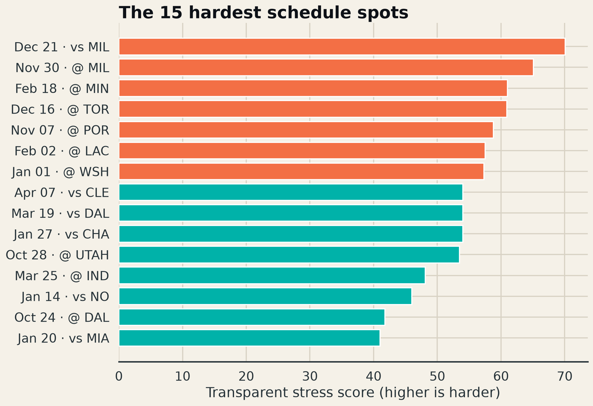

Which assigned games and stretches deserve proactive rotation planning, and where does the Europe trip alter the normal rest/travel pattern?
The published schedule currently contains 80 assigned games; two NBA Cup flex slots remain unresolved. Across those assigned dates, San Antonio has 13 back-to-backs, 18 three-games-in-four-nights spots, and roughly 53,962 miles of venue-to-venue travel. The highest-stress assigned date is Dec 21 vs MIL (score 70.1).
The stress score is an auditable index—not an injury prediction. It combines rest, recent game density, travel distance, time-zone changes, and international travel. Every component is retained in the downloadable result table.

Add expected player workload and arena-to-hotel travel timing once operational data is available; validate whether the stress index predicts residual performance after opponent strength and home court.